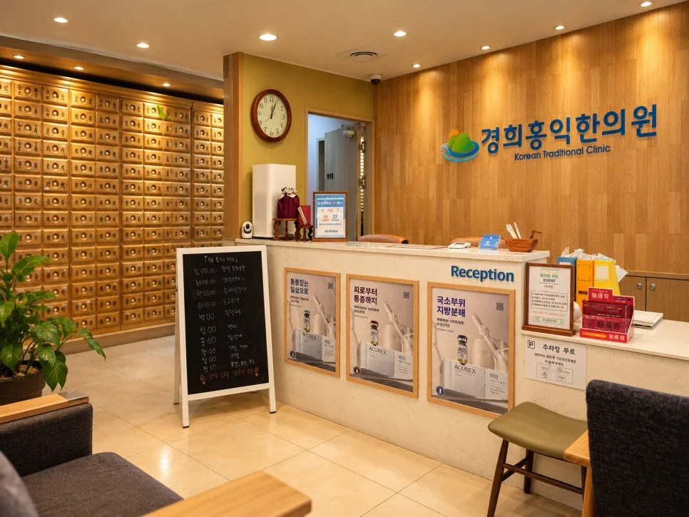

불편이 시작된 때와 상황
어떤 움직임에서 통증이 생기는지, 평소 상태에서 무엇이 달라졌는지 듣습니다. 이전에 받은 치료나 복용 중인 약도 함께 확인합니다.

안녕하세요. 대표원장 허진혁입니다.
'널리 인간을 이롭게 하라'
홍익인간의 정신으로
몸과 마음을 모두 살피는 한의원이 되고자
2007년 5월에 개원했습니다.
20년 이상의 임상경험과 10만건 이상의 치료 경험을 바탕으로
진심을 다해 환자분을 진료하고 있습니다.
어떤 움직임에서 통증이 생기는지, 평소 상태에서 무엇이 달라졌는지 듣습니다. 이전에 받은 치료나 복용 중인 약도 함께 확인합니다.
움직임과 통증 부위를 진찰하고, 필요하면 근골격계 초음파로 상태를 더 살핍니다. 진찰 결과를 바탕으로 침·약침·추나 등 고려할 수 있는 방법을 설명합니다.
어떤 동작이 편해졌는지, 어떤 불편이 남아 있는지 확인해 다음 진료 방향을 정합니다.
다대포해수욕장역 1번 출구 앞 수정프라자 3층에 있습니다.